Crash course for Adsorption Game
This is a very brief introduction into the electronic structure theory. It covers
touches only those concepts that are used in
Adsorption Game,
such as molecular orbitals, molecular symmetry and point groups,
character tables, electronic configurations
and configuration interaction. There are simple interactive questions for self-test on
this page. Therefore, javascript has to be enabled to turn them on.
-
A molecular orbital is the one-electron wave function. Molecular orbitals are constructed from the linear combinations of atomic orbitals. Suppose that two spatial 1s atomic orbitals (χa and χb) form two molecular orbitals (Ψ1 and Ψ2):
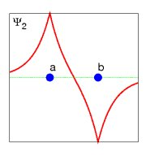 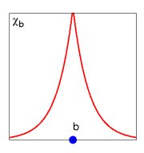 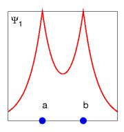 Question: What is the correct mathematical formula for the molecular orbital Ψ2?
Here, c1 and c2 are the molecular orbital coefficients. For the case c1=c2 the molecular orbital Ψ1 is symmetric with respect to the plane that divides atoms a and b, while Ψ2 is antisymmetric.
-
When symmetry is present in a molecule, it is important to find nonzero matrix elements between two orbitals. For this purpose, it is necessary to know the point group of a molecule and the irreducible representations of the symmetrized orbitals. For example, trans-butadiene falls in symmetry point group C2h. The character table for this point group is shown below.
In the character table each irreducible representation (rows: Ag, Bg, Au, Bu) describes how such an orbital transforms under a specific symmetry operation (columns: E, C2, I, σh). The additional information in the last two columns of the character table tells how a specific operator, for example, z-component of the electric dipole moment transforms. The molecular π-orbitals of trans-butadiene with the corresponding irreducible representation labels are schematically shown below.
φ4(Bg) : 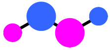
φ3(Au) : 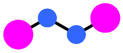
φ2(Bg) : 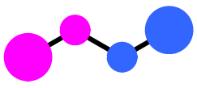
φ1(Au) : 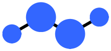
The radius of the projections for 2pz atomic orbitals is proportional to their contribution into a molecular orbital. Note, that z-axis is perpendicular to the screen plane. Therefore, all four orbitals are antisymmetric with respect to the σh plane. Further, φ2 and φ4 orbitals change sign after rotation around the C2 axis.
Question: Is φ4 orbital symmetric or antisymmetric with respect to the center of inversion (I) ?
-
The character table can be used to answer whether the integral of the form
I = ∫ φi A φj dV
vanishes or not. Here, A is an operator. The criteria for non vanishing integrals is the following: the product of the irreducible representations
Γ(φi) Γ(A) Γ(φj)
must contain the fully symmetric irreducible representation. In the case of the C2h point group, it is Ag. For example, if an operator A transforms according to Ag, then the matrix element between φ1 and φ4 is zero, because
Γ(φ1) Γ(A) Γ(φ4) = Au Ag Bg = Bu ≠ Ag
Now by making use of the C2h character table answer the following
Question: Does the transition
∫ φ1 x φ4 dV
have a nonzero intensity?
-
So far we have been considering only one-electron wave functions - molecular orbitals. Many-electron wave functions can be constructed from the molecular orbitals. However, there are certain constraints for multi-electron wave functions. They must be antisymmetric with respect to the permutation of any pair of electrons. For example, a simple product of orbitals
Ψ(1,2) = φ1(1) φ2(2)
can not be a true multi-electron wave function. The correct wave function would be
Ψ(1,2) = φ1(1) φ2(2) - φ1(2) φ2(1) .
The wave function must be normalized to the number of electrons:
∫ Ψ*(1,2) Ψ(1,2) dV1 dV2 = 2 .
This condition introduces the normalization constant, Nc
Ψ(1,2) = Nc (φ1(1) φ2(2) - φ1(2) φ2(1)) .
Note, that the number of orbitals in Ψ(1,2) is the same as the number of electrons. If Ψ(1,2) is the ground state, φ1 and φ2 are the occupied orbitals. When the number of orbitals exceeds the number of electrons, these additional (or virtual) orbitals can be used to construct the excited states wave functions (or electronic configurations), for example, a single excited state:
Ψ'(1,2) = Nc (φ1(1) φ3(2) - φ1(2) φ3(1)) ,
and a double excited state:
Ψ''(1,2) = Nc (φ3(1) φ4(2) - φ3(2) φ4(1)) .
There are six configurations all in all for the case of two electrons and four orbitals. They are listed in the table below.
# φ1 φ2 φ3 φ4 1 1 1 Ψ(1,2) 2 1 1 Ψ'(1,2) 3 1 1 4 1 1 5 1 1 6 1 1 Ψ''(1,2) However, you need to remember that each electron has a spin. Therefore, each orbital φi (or more correctly, a spin-orbital) in the above table contains the spatial and the spin part:
φ(1) = χ(1)σ(1) ,
where the spin projection σ can have two values: σ=+1/2,-1/2 or σ=α,β or σ=↑,↓. In order to see how the number of the electronic configurations grows with an increase of the number of orbitals, you can do the following
Exercise: enter all possible configurations for the case of two electrons and six spin-orbitals into the table below:
Sometimes, it is necessary to include several configurations into a wave function. For example, when the energies of the bonding and anti-bonding orbitals are getting very close to each other in the stretched hydrogen molecule

both configurations should be included into the wave function:
Φ(1,2) = a Ψ(1,2) + b Ψ''(1,2) .
Then, the coefficients a and b are found from the configuration interaction method.
-
It is convenient to express the configuration interaction equations in the second quantization operators (c†kσ and ckσ), which are defined as follows. The operator c†kσ creates an electron on the spatial orbital φk with the spin projection σ (σ=α,β or σ=↑,↓). For example:
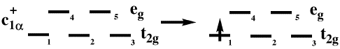
The operator ckσ annihilates an electron on the spatial orbital φk with the spin projection σ. For example:
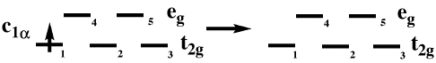
Additionally, an electron can not be created twice on the same spatial orbital φk and with the same spin projection σ:
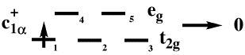
When the annihilation operator acts on an empty orbital, the result is also zero:
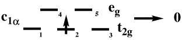
As we can see, these operators change the number of electrons in a molecule. However, we need to describe promotions of electrons to vacant orbitals. In other words, it is necessary to have such products of the creation and annihilation operators that describe the interaction of different configurations containing the same number of electrons. We can accomplish this with the help of the following one- and two-electron operators. The one-electron operator (c†iσ cjσ) describes electron hops (or excitations) of a single electron from one orbital to another:
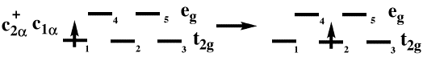
Question: Can the following two configurations
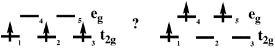
be transformed into each other by any one-electron operator?
The last ingredient necessary for the calculation of the one-electron operator matrix elements between two configurations is the weight of the product of the creation/annihilation operators:
hij = (∫ φi h φj dV) c†iσ cjσ
As for the two-electron operators, they consist of two creation and two annihilation operators which (not surprisingly) affect two particles. For example:
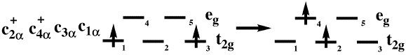
The weight of the two-electron operators contains the two-electron molecular integrals:
Vijkn = (1/2) (∫ φi(1) φj(1)(1/r12)φk(2) φn(2) dV1 dV2) c†iσ c†kτ cnτ cjσ
There is a particular case of the two-electron operator, which does not correspond to electron hops. It is the Hubbard operator:
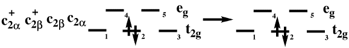
This operator describes an electron repulsion of particles with the opposite projections of spin and residing on the same spatial orbital. The Hubbard operator contributes to the diagonal term between two identical configurations.
It can be seen that the amount of possible combinations for the two-electron terms, M, is proportional to N4, where N is the number of orbitals. It is obvious that M becomes huge very quickly with an increase of the number of orbitals. One of the ways to overcome this difficulty is to truncate the number of configurations in the wave function. The impurity models (such as the one that is employed in Adsorption Game) use a different strategy that briefly can be explained as follows. The two-electron molecular integrals are calculated only if they include the so called correlated orbitals. For the rest of the orbitals, these integrals are set to zero.